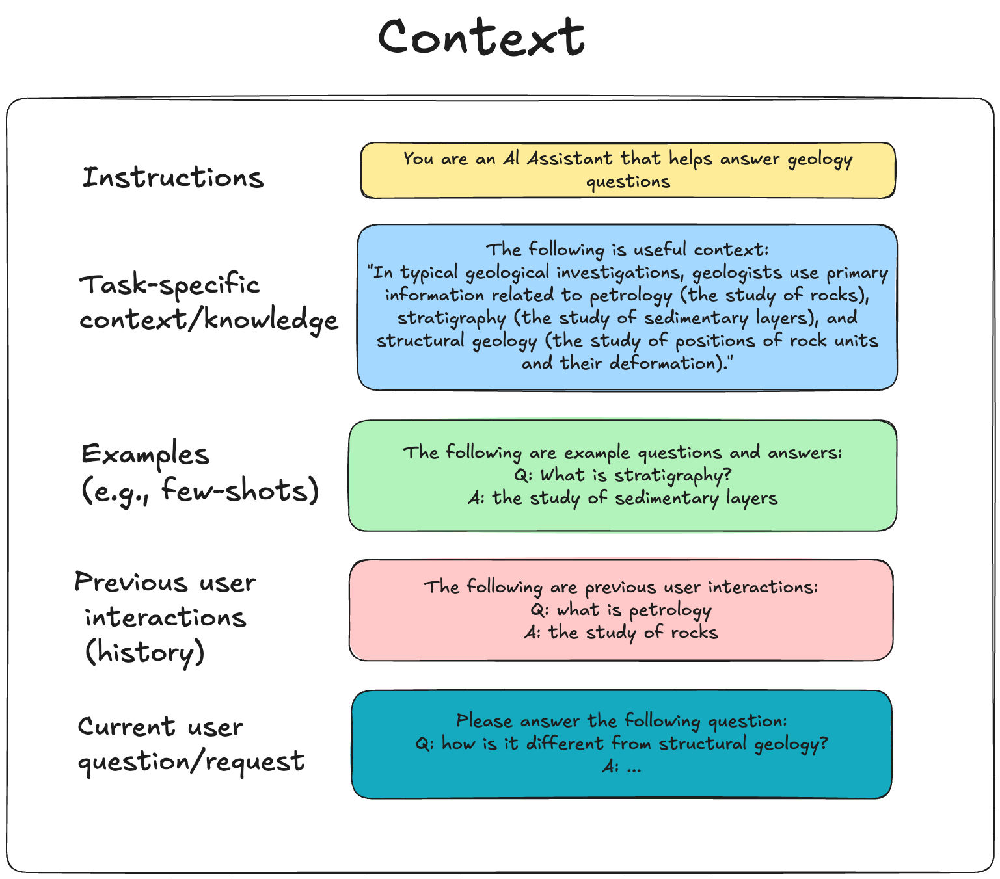
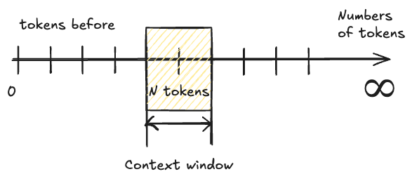
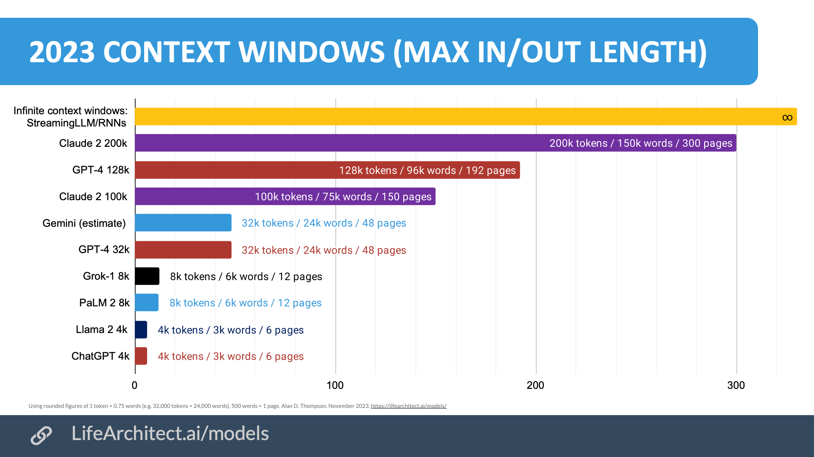
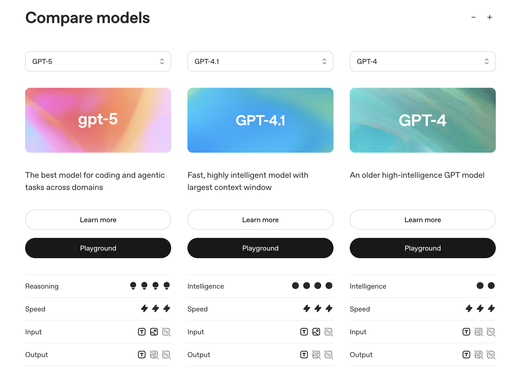
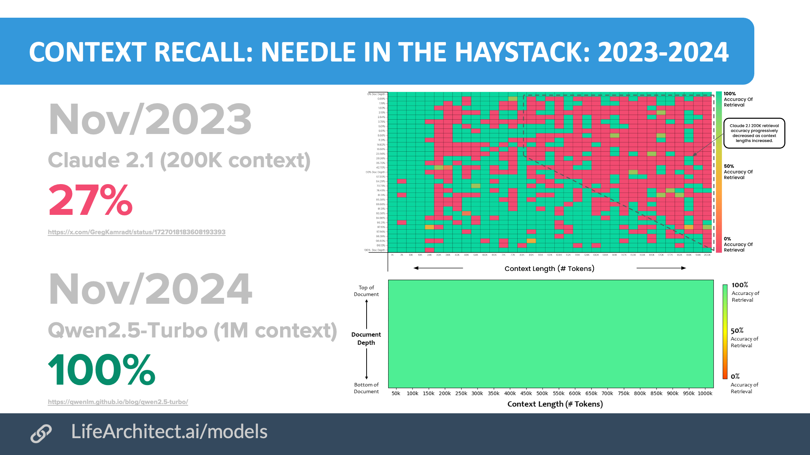
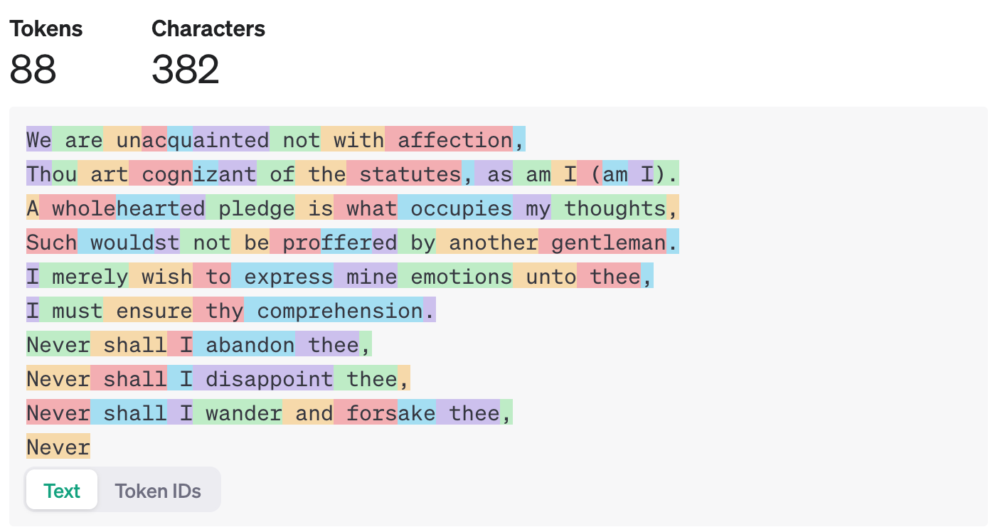
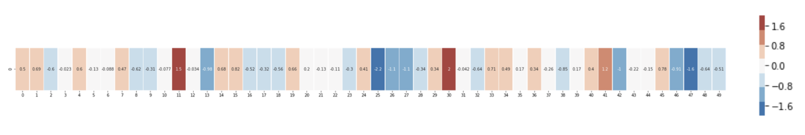
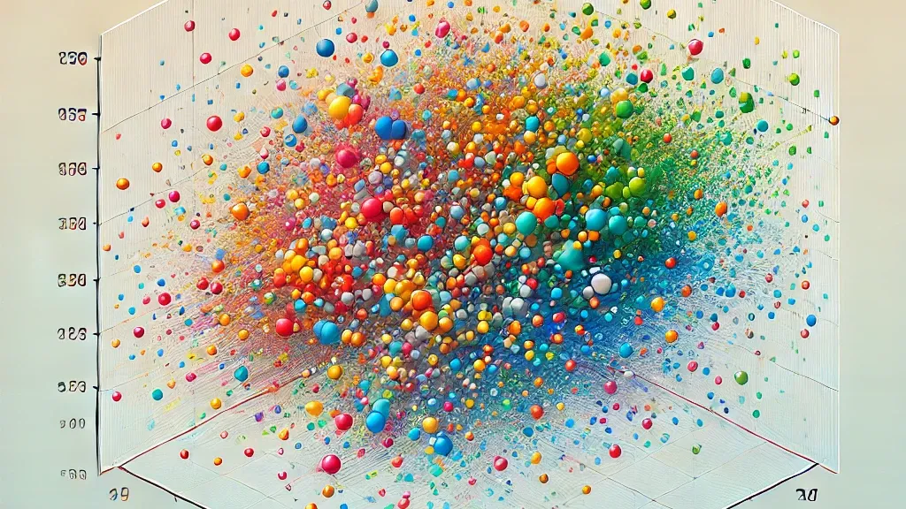
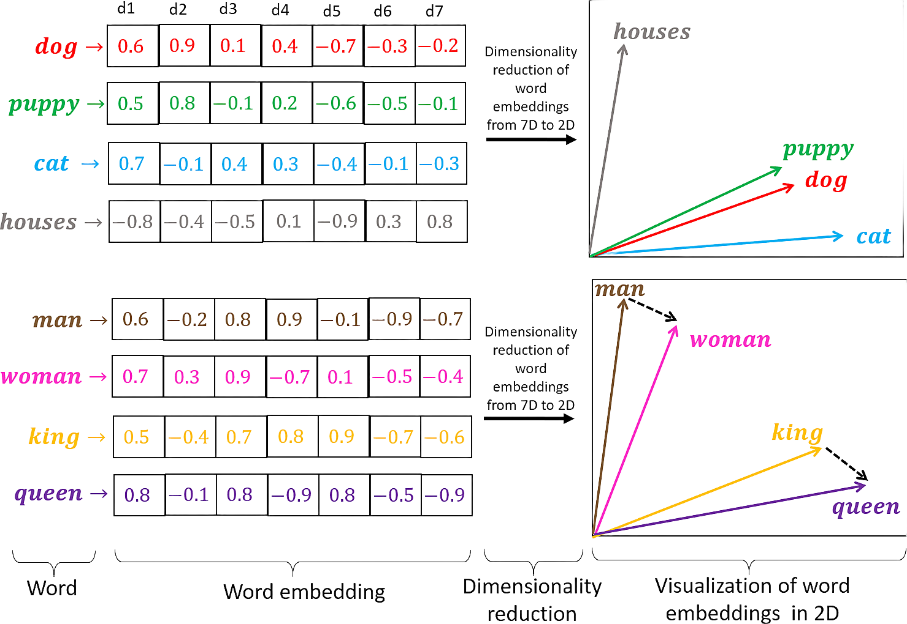
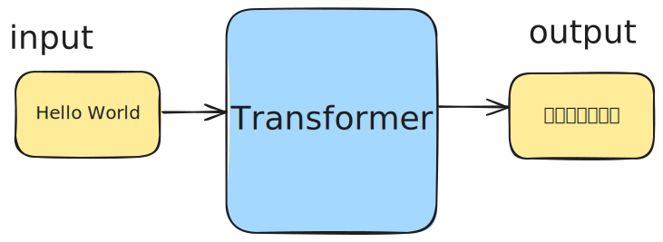

<!DOCTYPE html>
<html lang="en">
  <head>
    <meta charset="utf-8" />
    <meta name="viewport" content="width=device-width, initial-scale=1.0, maximum-scale=1.0, user-scalable=no" />

    <title>LLMs configuration and work with local models</title>
    <link rel="stylesheet" href="dist/reveal.css" />
    <link rel="stylesheet" href="dist/theme/serif.css" id="theme" />
    <link rel="stylesheet" href="plugin/highlight/monokai.css" />
	<link rel="stylesheet" href="css/layout.css" />
	<link rel="stylesheet" href="plugin/customcontrols/style.css">
	<link rel="stylesheet" href="plugin/chalkboard/style.css">

	<link rel="stylesheet" href="plugin/reveal-pointer/pointer.css" />


    <script defer src="dist/fontawesome/all.min.js"></script>

	<script type="text/javascript">
		var forgetPop = true;
		function onPopState(event) {
			if(forgetPop){
				forgetPop = false;
			} else {
				parent.postMessage(event.target.location.href, "app://obsidian.md");
			}
        }
		window.onpopstate = onPopState;
		window.onmessage = event => {
			if(event.data == "reload"){
				window.document.location.reload();
			}
			forgetPop = true;
		}

		function fitElements(){
			const itemsToFit = document.getElementsByClassName('fitText');
			for (const item in itemsToFit) {
				if (Object.hasOwnProperty.call(itemsToFit, item)) {
					var element = itemsToFit[item];
					fitElement(element,1, 1000);
					element.classList.remove('fitText');
				}
			}
		}

		function fitElement(element, start, end){

			let size = (end + start) / 2;
			element.style.fontSize = `${size}px`;

			if(Math.abs(start - end) < 1){
				while(element.scrollHeight > element.offsetHeight){
					size--;
					element.style.fontSize = `${size}px`;
				}
				return;
			}

			if(element.scrollHeight > element.offsetHeight){
				fitElement(element, start, size);
			} else {
				fitElement(element, size, end);
			}		
		}


		document.onreadystatechange = () => {
			fitElements();
			if (document.readyState === 'complete') {
				if (window.location.href.indexOf("?export") != -1){
					parent.postMessage(event.target.location.href, "app://obsidian.md");
				}
				if (window.location.href.indexOf("print-pdf") != -1){
					let stateCheck = setInterval(() => {
						clearInterval(stateCheck);
						window.print();
					}, 250);
				}
			}
	};


        </script>
  </head>
  <body>
    <div class="reveal">
      <div class="slides"><section  data-markdown><script type="text/template"><!-- .slide: class="drop" -->
<div class="" style="position: absolute; left: 0px; top: 0px; height: 900px; width: 1440px; min-height: 900px; display: flex; flex-direction: column; align-items: center; justify-content: center" absolute="true">

### Module 2:  LLMs architecture, characteristics, parameters. Working with Local LLMS. Part 1.

Agenda

- &shy;<!-- .element: class="fragment" data-fragment-index="1" -->LLMs main concepts: architecture details & how word prediction works?
- &shy;<!-- .element: class="fragment" data-fragment-index="2" -->LLMs characteristics: important aspects for the choice of the model
</div></script></section><section ><section data-markdown><script type="text/template"><!-- .slide: class="drop" -->
<div class="" style="position: absolute; left: 0px; top: 0px; height: 900px; width: 1440px; min-height: 900px; display: flex; flex-direction: column; align-items: center; justify-content: center" absolute="true">

### LLMs main concepts

> “Artificial Intelligence has transitioned from a distant dream to a present-day reality.”

But, it's not a magic...
</div></script></section><section data-markdown><script type="text/template"><!-- .slide: class="drop" data-auto-animate="true" -->
<div class="" style="position: absolute; left: 0px; top: 0px; height: 900px; width: 1440px; min-height: 900px; display: flex; flex-direction: column; align-items: center; justify-content: center" absolute="true">

### What is a LLM context?

 **context** refers to all the information that the model uses to generate a response to a query or prompt.
 

</div></script></section><section data-markdown><script type="text/template"><!-- .slide: class="drop" data-auto-animate="true" -->
<div class="" style="position: absolute; left: 0px; top: 0px; height: 900px; width: 1440px; min-height: 900px; display: flex; flex-direction: column; align-items: center; justify-content: center" absolute="true">


</div></script></section><section data-markdown><script type="text/template"><!-- .slide: class="drop" -->
<div class="" style="position: absolute; left: 0px; top: 0px; height: 900px; width: 1440px; min-height: 900px; display: flex; flex-direction: column; align-items: center; justify-content: center" absolute="true">

### What is a context window?

A context window is a textual range around a target token that a large language model (LLM) can process when the information is generated.

In other words context window is the short-term memory of the model


</div></script></section><section data-markdown><script type="text/template"><!-- .slide: class="drop" -->
<div class="" style="position: absolute; left: 0px; top: 0px; height: 900px; width: 1440px; min-height: 900px; display: flex; flex-direction: column; align-items: center; justify-content: center" absolute="true">

### LLM context length for the popular LLM models in 2023


</div></script></section><section data-markdown><script type="text/template"><!-- .slide: class="drop" -->
<div class="" style="position: absolute; left: 0px; top: 0px; height: 900px; width: 1440px; min-height: 900px; display: flex; flex-direction: column; align-items: center; justify-content: center" absolute="true">

### LLM context length for the popular LLM models in 2025

<div class="block">

<!-- .element: style="font-size: 1.8rem" -->

| Model                 | Context Length (Tokens) | Approximate Pages (English Text) |
| --------------------- | ----------------------- | -------------------------------- |
| **GPT-3.5**           | 4,096                   | ~5.5 pages                       |
| **GPT-4**             | 8,192                   | ~11 pages                        |
| **GPT-4-32k**         | 32,768                  | ~44 pages                        |
| **Llama 1**           | 2,048                   | ~2.7 pages                       |
| **Llama 2**           | 4,096                   | ~5.5 pages                       |
| **Llama 3**           | 128,000                 | ~170 pages                       |
| **Mistral 7B**        | 8,000                   | ~10.5 pages                      |
| **PaLM 2**            | 8,000                   | ~10.5 pages                      |
| **Claude 2**          | 100,000                 | ~133 pages                       |
| **Claude 3.5 Sonnet** | 200,000                 | ~266 pages                       |
| **Gemini 1.5 Pro**    | 1,000,000               | ~1360 pages                      |
| **llama4**            | 10,000,000              | ~13600 pages                     |

</div>
</div></script></section><section data-markdown><script type="text/template"><!-- .slide: class="drop" -->
<div class="" style="position: absolute; left: 0px; top: 0px; height: 900px; width: 1440px; min-height: 900px; display: flex; flex-direction: column; align-items: center; justify-content: center" absolute="true">

### GPT models comparison




https://platform.openai.com/docs/models/compare?model=gpt-5
</div></script></section><section data-markdown><script type="text/template"><!-- .slide: class="drop" -->
<div class="" style="position: absolute; left: 0px; top: 0px; height: 900px; width: 1440px; min-height: 900px; display: flex; flex-direction: column; align-items: center; justify-content: center" absolute="true">

### LLM context length


</div></script></section><section data-markdown><script type="text/template"><!-- .slide: class="drop" -->
<div class="" style="position: absolute; left: 0px; top: 0px; height: 900px; width: 1440px; min-height: 900px; display: flex; flex-direction: column; align-items: center; justify-content: center" absolute="true">

### LLM tokenization

This process of cataloging pieces of a textual sequence is called **tokenization**
</div></script></section><section data-markdown><script type="text/template"><!-- .slide: class="drop" -->
<div class="" style="position: absolute; left: 0px; top: 0px; height: 900px; width: 1440px; min-height: 900px; display: flex; flex-direction: column; align-items: center; justify-content: center" absolute="true">

### What is the token and tokenization?

- **Input**: The model receives the raw text, like a sentence or a document.
- **Tokenization**: The text is split into smaller units called tokens, which can be words, subwords, or characters, depending on the tokenizer.

**Example**:
- Text: `"I love programming."`
- Tokenized: `["I", "love", "programming", "."]`
</div></script></section><section data-markdown><script type="text/template"><!-- .slide: class="drop" -->
<div class="" style="position: absolute; left: 0px; top: 0px; height: 900px; width: 1440px; min-height: 900px; display: flex; flex-direction: column; align-items: center; justify-content: center" absolute="true">

### What is the token and tokenization?

- https://platform.openai.com/tokenizer
- https://tiktokenizer.vercel.app/


</div>

<aside class="notes"><p>This is the text for tokenization:</p>
<p>&quot;The rapid advancements in artificial intelligence have sparked a global conversation about its impact on various industries. As AI technology evolves, it brings about significant changes in sectors such as healthcare, finance, education, and entertainment. For example, in healthcare, AI algorithms are being used to assist in diagnosing diseases, predicting patient outcomes, and personalizing treatment plans. In finance, automated trading systems and fraud detection algorithms help streamline operations and improve security.</p>
<p>However, alongside these advancements come ethical concerns. Questions about data privacy, algorithmic bias, and the displacement of human workers are central to ongoing debates. Policymakers, researchers, and industry leaders are working together to establish frameworks that balance innovation with responsibility. This collaborative approach aims to maximize the benefits of AI while addressing its potential risks.&quot;</p>
</aside></script></section><section data-markdown><script type="text/template"><!-- .slide: class="drop" -->
<div class="" style="position: absolute; left: 0px; top: 0px; height: 900px; width: 1440px; min-height: 900px; display: flex; flex-direction: column; align-items: center; justify-content: center" absolute="true">

### What’s the difference between tokens and characters?

> According to the ChatGPT LLM tokenizer, some general rules of thumb for defining tokens are that one token generally corresponds to ~4 characters of text for common English text, translating to roughly ¾ of a word (so 100 tokens ~= 75 words).
</div></script></section><section data-markdown><script type="text/template"><!-- .slide: class="drop" -->
<div class="" style="position: absolute; left: 0px; top: 0px; height: 900px; width: 1440px; min-height: 900px; display: flex; flex-direction: column; align-items: center; justify-content: center" absolute="true">

### Why do we need tokens? 

- to calculate the input size to LLM
- to calculate the cost of LLM usage or education
</div></script></section><section data-markdown><script type="text/template"><!-- .slide: class="drop" -->
<div class="" style="position: absolute; left: 0px; top: 0px; height: 900px; width: 1440px; min-height: 900px; display: flex; flex-direction: column; align-items: center; justify-content: center" absolute="true">

### Practice time


</div>

<aside class="notes"><p>Link: <a href="http://localhost:8888/notebooks/examples/tokenization-embeddings.ipynb#Chunks-tokenezation">http://localhost:8888/notebooks/examples/tokenization-embeddings.ipynb#Chunks-tokenezation</a>
Show the process of text tokenization</p>
</aside></script></section></section><section ><section data-markdown><script type="text/template"><!-- .slide: class="drop" -->
<div class="" style="position: absolute; left: 0px; top: 0px; height: 900px; width: 1440px; min-height: 900px; display: flex; flex-direction: column; align-items: center; justify-content: center" absolute="true">

### What is Embedding?

Embedding is a high-dimensional (768, 1536, etc) representation of data that captures the semantic meaning, relationships, and contextual information of the original input


</div></script></section><section data-markdown><script type="text/template"><!-- .slide: class="drop" -->
<div class="" style="position: absolute; left: 0px; top: 0px; height: 900px; width: 1440px; min-height: 900px; display: flex; flex-direction: column; align-items: center; justify-content: center" absolute="true">

### What is high-dimension space?


</div></script></section><section data-markdown><script type="text/template"><!-- .slide: class="drop" -->
<div class="" style="position: absolute; left: 0px; top: 0px; height: 900px; width: 1440px; min-height: 900px; display: flex; flex-direction: column; align-items: center; justify-content: center" absolute="true">

### What is high-dimension space?


</div></script></section><section data-markdown><script type="text/template"><!-- .slide: class="drop" -->
<div class="" style="position: absolute; left: 0px; top: 0px; height: 900px; width: 1440px; min-height: 900px; display: flex; flex-direction: column; align-items: center; justify-content: center" absolute="true">

### Words vector representation


</div></script></section><section data-markdown><script type="text/template"><!-- .slide: class="drop" -->
<div class="" style="position: absolute; left: 0px; top: 0px; height: 900px; width: 1440px; min-height: 900px; display: flex; flex-direction: column; align-items: center; justify-content: center" absolute="true">

### Words vector representation


</div></script></section><section data-markdown><script type="text/template"><!-- .slide: class="drop" -->
<div class="" style="position: absolute; left: 0px; top: 0px; height: 900px; width: 1440px; min-height: 900px; display: flex; flex-direction: column; align-items: center; justify-content: center" absolute="true">

### Distance

A common way to define how 2 vectors are similar is to calculate a `cosine similarity`

> The smaller the angle between the two vectors, the more similar they are to each other.


</div></script></section><section data-markdown><script type="text/template"><!-- .slide: class="drop" data-visibility="hidden" -->
<div class="" style="position: absolute; left: 0px; top: 0px; height: 900px; width: 1440px; min-height: 900px; display: flex; flex-direction: column; align-items: center; justify-content: center" absolute="true">


</div></script></section><section data-markdown><script type="text/template"><!-- .slide: class="drop" -->
<div class="" style="position: absolute; left: 0px; top: 0px; height: 900px; width: 1440px; min-height: 900px; display: flex; flex-direction: column; align-items: center; justify-content: center" absolute="true">

### Practice time


</div>

<aside class="notes"><p>Link: <a href="http://localhost:8888/notebooks/examples/tokenization-embeddings.ipynb">http://localhost:8888/notebooks/examples/tokenization-embeddings.ipynb</a></p>
</aside></script></section></section><section ><section data-markdown><script type="text/template"><!-- .slide: class="drop" -->
<div class="" style="position: absolute; left: 0px; top: 0px; height: 900px; width: 1440px; min-height: 900px; display: flex; flex-direction: column; align-items: center; justify-content: center" absolute="true">

### Contextualized embeddings

A simple word vector scheme like this doesn’t capture an important fact about natural language: words often have multiple meanings

- John picks up a **magazine**.
- Susan works for a **magazine**.
</div>

<aside class="notes"><p>For example, the word <strong>bank</strong> can refer to a financial institution <em>or</em> to the land next to a river.</p>
</aside></script></section><section data-markdown><script type="text/template"><!-- .slide: class="drop" -->
<div class="" style="position: absolute; left: 0px; top: 0px; height: 900px; width: 1440px; min-height: 900px; display: flex; flex-direction: column; align-items: center; justify-content: center" absolute="true">

### Contextualized embeddings

Contextualized embeddings take this one step further by capturing the context in which a word appears.

Modern LLMs  like GPT-4, GPT-3.5, and LLaMA 3.x use **contextual embeddings**. 

- This means that each token’s final embedding reflects both its **original** meaning and its **role** in the specific sentence or sequence.
- Embedding are **dynamic** and **change based on the surrounding text**. The same token can have different embeddings in different contexts, making these models much more flexible and capable of understanding nuanced language
</div></script></section><section data-markdown><script type="text/template"><!-- .slide: class="drop" -->
<div class="" style="position: absolute; left: 0px; top: 0px; height: 900px; width: 1440px; min-height: 900px; display: flex; flex-direction: column; align-items: center; justify-content: center" absolute="true">

### Ok, but what happens next?


How do LLMs predict words based on the user's input?
</div></script></section><section data-markdown><script type="text/template"><!-- .slide: class="drop" -->
<div class="" style="position: absolute; left: 0px; top: 0px; height: 900px; width: 1440px; min-height: 900px; display: flex; flex-direction: column; align-items: center; justify-content: center" absolute="true">

### Word prediction


</div></script></section></section><section ><section data-markdown><script type="text/template"><!-- .slide: class="drop" -->
<div class="" style="position: absolute; left: 0px; top: 0px; height: 900px; width: 1440px; min-height: 900px; display: flex; flex-direction: column; align-items: center; justify-content: center" absolute="true">

### Transformer Architecture 


</div></script></section><section data-markdown><script type="text/template"><!-- .slide: class="drop" -->
<div class="" style="position: absolute; left: 0px; top: 0px; height: 900px; width: 1440px; min-height: 900px; display: flex; flex-direction: column; align-items: center; justify-content: center" absolute="true">

### What are Transformers?

A **Transformer** is a type of deep learning model. The **core idea** behind Transformers is the use of **attention mechanisms**, particularly **self-attention**, which allows the model to focus on relevant parts of the input sequence regardless of their distance from the current position.
</div></script></section><section data-markdown><script type="text/template"><!-- .slide: class="drop" -->
<div class="" style="position: absolute; left: 0px; top: 0px; height: 900px; width: 1440px; min-height: 900px; display: flex; flex-direction: column; align-items: center; justify-content: center" absolute="true">

### Transformer Block Part 1




 **Transformer Block** is the fundamental building block of the model that processes and transforms the input data.
</div></script></section><section data-markdown><script type="text/template"><!-- .slide: class="drop" -->
<div class="" style="position: absolute; left: 0px; top: 0px; height: 900px; width: 1440px; min-height: 900px; display: flex; flex-direction: column; align-items: center; justify-content: center" absolute="true">

### Transformers Block Part 2


<div class="block">

<!-- .element: style="font-size: 1.5rem" -->

The **encoder** is responsible for processing the input data and generating a context-rich representation of that data.

The **decoder** is responsible for generating output sequences, such as translating text or producing new text based on the input provided by the encoder.

</div>
</div></script></section><section data-markdown><script type="text/template"><!-- .slide: class="drop" -->
<div class="" style="position: absolute; left: 0px; top: 0px; height: 900px; width: 1440px; min-height: 900px; display: flex; flex-direction: column; align-items: center; justify-content: center" absolute="true">

### Attention Mechanism 

**Attention Mechanism**: The attention mechanism helps the model understand the context by assigning attention weights to each token in the sequence relative to others.

[Attention Is All You Need 2017](https://arxiv.org/pdf/1706.03762)
</div></script></section><section data-markdown><script type="text/template"><!-- .slide: class="drop" -->
<div class="" style="position: absolute; left: 0px; top: 0px; height: 900px; width: 1440px; min-height: 900px; display: flex; flex-direction: column; align-items: center; justify-content: center" absolute="true">

### Attention Mechanism

The main goal is to capture contextual information and relationships between words.


- Allows each token to take the context it appears in into account
- Weights indicate the importance of each word relative to the current one
</div></script></section><section data-markdown><script type="text/template"><!-- .slide: class="drop" -->
<div class="" style="position: absolute; left: 0px; top: 0px; height: 900px; width: 1440px; min-height: 900px; display: flex; flex-direction: column; align-items: center; justify-content: center" absolute="true">

### Next word prediction

Feed-forward neural network or MLP (Multilayer Perceptron) 


</div></script></section><section data-markdown><script type="text/template"><!-- .slide: class="drop" -->
<div class="" style="position: absolute; left: 0px; top: 0px; height: 900px; width: 1440px; min-height: 900px; display: flex; flex-direction: column; align-items: center; justify-content: center" absolute="true">

### Output Probabilities

The final linear layers transform the processed embeddings into probabilities, enabling the model to make predictions about the next token in a sequence.


_Programmin is one ..._ <!-- .element: style="color: darkgreen" -->


<div class="block">

<!-- .element: style="font-size: 1.5rem" -->

| **Tokens** | **Probabilities** |
|------------|-------------------|
| **of**     | **77.72%**        |
| thing      | 6.75%             |
| way        | 3.58%             |
| aspect     | 1.92%             |
| area       | 1.66%             |
| part       | 1.21%             |
| step       | < 0.01%           |
| such       | < 0.01%           |
| big        | < 0.01%           |

</div>
</div></script></section><section data-markdown><script type="text/template"><!-- .slide: class="drop" -->
<div class="" style="position: absolute; left: 0px; top: 0px; height: 900px; width: 1440px; min-height: 900px; display: flex; flex-direction: column; align-items: center; justify-content: center" absolute="true">

### Transformers Block Part 3


<div class="block">

<!-- .element: style="font-size: 1.5rem" -->

- The **encoder** reads the input sequence (e.g., a sentence in English) and outputs context-rich representations for each input token.
- The **decoder** takes these encoder outputs and, along with its own self-attention mechanism, generates the output sequence (e.g., a translated sentence in French) step by step. It uses the encoded input sequence to inform its generation process.
- The **encoder-decoder** attention layer helps the decoder focus on relevant parts of the input sentence.

</div>
</div></script></section><section data-markdown><script type="text/template"><!-- .slide: class="drop" -->
<div class="" style="position: absolute; left: 0px; top: 0px; height: 900px; width: 1440px; min-height: 900px; display: flex; flex-direction: column; align-items: center; justify-content: center" absolute="true">

### Encoder-only Models

<div class="block">

<!-- .element: style="font-size: 1.5rem; text-align: left" -->

The transformer encoder architecture is used for tasks like text classification, where the model must classify a piece of text into one of several predefined categories, such as sentiment analysis, topic classification, or spam detection.

 **Examples:** BERT, RoBERTa

**What they can do:**

- **Text classification:** Spam detection, sentiment analysis _(Input: a sentence, Output: a label like "positive" or "negative")_
- **Named Entity Recognition (NER):** Extract entities like names, dates, locations from text.
- **Question answering (extractive):** Given a context and a question, extract the correct answer from the context.

**What they cannot do:**

- **Generate text:** They cannot generate new sequences of text since they are designed to understand and encode existing text.  
    _(Example: They can classify a sentence but cannot write a continuation of it.)_
- **Translate text:** Since there's no decoder to generate output in another language.

</div>
</div></script></section><section data-markdown><script type="text/template"><!-- .slide: class="drop" -->
<div class="" style="position: absolute; left: 0px; top: 0px; height: 900px; width: 1440px; min-height: 900px; display: flex; flex-direction: column; align-items: center; justify-content: center" absolute="true">

### Decoder-only Models

<div class="block">

<!-- .element: style="font-size: 1.5rem; text-align: left" -->

The transformer decoder architecture is used for tasks like language generation, where the model must generate a sequence of words based on an input prompt or context.

**Examples:** GPT (Generative Pre-trained Transformer), GPT-2, GPT-3, GPT-4

**What they can do:** 

- **Text generation:** Generate coherent text given a prompt _(Input: a prompt like "Once upon a time", Output: a continuation like "there was a brave knight who...")_
- **Summarization:** Summarize a given text by generating a shorter version _(Input: a paragraph, Output: a shorter summary)_
- **Dialogue systems (chatbots):** Engage in conversations by generating appropriate responses.

**What they cannot do:**

- **Directly encode input for complex tasks like classification:** Decoder-only models don't inherently "understand" the entire input at once like encoder-only models. They work better when they need to generate something rather than analyze.
- **Translate with high accuracy (compared to Encoder-Decoder models):** While they can translate text (e.g., GPT models can), they aren't as specialized for it as encoder-decoder models.

</div>
</div></script></section><section data-markdown><script type="text/template"><!-- .slide: class="drop" -->
<div class="" style="position: absolute; left: 0px; top: 0px; height: 900px; width: 1440px; min-height: 900px; display: flex; flex-direction: column; align-items: center; justify-content: center" absolute="true">

### Encoder-Decoder Models

<div class="block">

<!-- .element: style="font-size: 1.5rem; text-align: left" -->

The transformer encoder-decoder architecture is used for tasks like language translation, where the model must take in a sentence in one language and output a sentence in another language.

**Examples:** T5 (Text-To-Text Transfer Transformer), BART, Seq2Seq models with Attention

**What they can do:**

- **Machine Translation:** Given a sentence in one language, generate its translation in another language _(Input: "How are you?" in English, Output: "Як справи?" in Ukrainian)_
- **Summarization:** Generate a summary of a given text _(Input: a long article, Output: a short summary)_
- **Text generation:** Just like decoder-only models, they can generate text.
- **Question answering (generative):** Generate answers based on given context and question.

**What they cannot do:**

- **Be as lightweight as encoder-only or decoder-only models:** Since they have both an encoder and a decoder, they require more memory and compute power.
- **Generate very long sequences efficiently:** For extremely long text generation, decoder-only models (like GPT) tend to perform better.

</div>
</div></script></section></section><section ><section data-markdown><script type="text/template"><!-- .slide: class="drop" -->
<div class="" style="position: absolute; left: 0px; top: 0px; height: 900px; width: 1440px; min-height: 900px; display: flex; flex-direction: column; align-items: center; justify-content: center" absolute="true">

### Demo time

https://poloclub.github.io/transformer-explainer/
</div></script></section><section data-markdown><script type="text/template"><!-- .slide: class="drop" -->
<div class="" style="position: absolute; left: 0px; top: 0px; height: 900px; width: 1440px; min-height: 900px; display: flex; flex-direction: column; align-items: center; justify-content: center" absolute="true">

### Transformer Architecture

Every text-generative Transformer consists of these **three key components**:

<div class="block">

<!-- .element: style="font-size: 2rem" -->

- **Embedding**: Text input is divided into smaller units called tokens, which can be words or subwords. These tokens are converted into numerical vectors called embeddings, which capture the semantic meaning of words.
- &shy;<!-- .element: class="fragment" data-fragment-index="1" -->**Transformer Block** is the fundamental building block of the model that processes and transforms the input data. Each block includes:
	- &shy;<!-- .element: class="fragment" data-fragment-index="2" -->**Attention Mechanism**, the core component of the Transformer block. It allows tokens to communicate with other tokens, capturing contextual information and relationships between words.
	- &shy;<!-- .element: class="fragment" data-fragment-index="3" -->**MLP (Multilayer Perceptron) Layer**, a feed-forward network that operates on each token independently. While the goal of the attention layer is to route information between tokens, the goal of the MLP is to refine each token's representation.
- &shy;<!-- .element: class="fragment" data-fragment-index="4" --> **Output Probabilities**:  The final linear layers transform the processed embeddings into probabilities, enabling the model to make predictions about the next token in a sequence.
</div>
</div></script></section><section data-markdown><script type="text/template"><!-- .slide: class="drop" -->
<div class="" style="position: absolute; left: 0px; top: 0px; height: 900px; width: 1440px; min-height: 900px; display: flex; flex-direction: column; align-items: center; justify-content: center" absolute="true">

### So, to be short

The whole process of LLM word prediction looks like this:


*More on that here (thanks to O.Chaplia): [Large Language Models, Transformer Architecture, and Text Generation](https://ai.plainenglish.io/large-language-models-transformer-architecture-text-generation-0f1a81f44873)*
</div></script></section><section data-markdown><script type="text/template"><!-- .slide: class="drop" -->
<div class="" style="position: absolute; left: 0px; top: 0px; height: 900px; width: 1440px; min-height: 900px; display: flex; flex-direction: column; align-items: center; justify-content: center" absolute="true">

### Sum up

<div class="block">

<!-- .element: style="font-size: 1.5rem" -->

- **Tokenization**: The input text is split into smaller units (tokens).
- &shy;<!-- .element: class="fragment" data-fragment-index="1" -->**Embeddings**: Each token is first mapped  to an embedding vector. The initial token embeddings are passed through multiple layers of the network to create **contextual embeddings**
- &shy;<!-- .element: class="fragment" data-fragment-index="2" -->**Encoding**: The input is encoded, and relationships between tokens are processed via the **attention mechanism**.
- &shy;<!-- .element: class="fragment" data-fragment-index="3" -->**Decoding**: The model generates text sequentially, predicting one token at a time. 
	- For each token, the model outputs a probability distribution over the vocabulary
	- **Token Selection**: Various sampling techniques (e.g., greedy search, beam search, top-k sampling, top-p sampling) are applied to choose the next token.
- &shy;<!-- .element: class="fragment" data-fragment-index="4" -->**Sequence Generation**: The selected token is added to the sequence, and the process repeats until the desired text length is achieved.
- &shy;<!-- .element: class="fragment" data-fragment-index="5" -->**Post-processing**: Optional steps for refining the output, such as grammar correction and punctuation adjustment.

</div>
</div></script></section></section><section  data-markdown><script type="text/template"><!-- .slide: class="drop" data-visibility="hidden" -->
<div class="" style="position: absolute; left: 0px; top: 0px; height: 900px; width: 1440px; min-height: 900px; display: flex; flex-direction: column; align-items: center; justify-content: center" absolute="true">


</div></script></section><section  data-markdown><script type="text/template"><!-- .slide: class="drop" -->
<div class="" style="position: absolute; left: 0px; top: 0px; height: 900px; width: 1440px; min-height: 900px; display: flex; flex-direction: column; align-items: center; justify-content: center" absolute="true">

### Q&A Session


</div></script></section></div>
    </div>

    <script src="dist/reveal.js"></script>

    <script src="plugin/markdown/markdown.js"></script>
    <script src="plugin/highlight/highlight.js"></script>
    <script src="plugin/zoom/zoom.js"></script>
    <script src="plugin/notes/notes.js"></script>
    <script src="plugin/math/math.js"></script>
	<script src="plugin/mermaid/mermaid.js"></script>
	<script src="plugin/chart/chart.min.js"></script>
	<script src="plugin/chart/plugin.js"></script>
	<script src="plugin/menu/menu.js"></script>
	<script src="plugin/customcontrols/plugin.js"></script>
	<script src="plugin/chalkboard/plugin.js"></script>
	<script src="plugin/reveal-pointer/pointer.js"></script>
	<script src="plugin/elapsed-time-bar/elapsed-time-bar.js"></script>

    <script>
      function extend() {
        var target = {};
        for (var i = 0; i < arguments.length; i++) {
          var source = arguments[i];
          for (var key in source) {
            if (source.hasOwnProperty(key)) {
              target[key] = source[key];
            }
          }
        }
        return target;
      }

	  function isLight(color) {
		let hex = color.replace('#', '');

		// convert #fff => #ffffff
		if(hex.length == 3){
			hex = `${hex[0]}${hex[0]}${hex[1]}${hex[1]}${hex[2]}${hex[2]}`;
		}

		const c_r = parseInt(hex.substr(0, 2), 16);
		const c_g = parseInt(hex.substr(2, 2), 16);
		const c_b = parseInt(hex.substr(4, 2), 16);
		const brightness = ((c_r * 299) + (c_g * 587) + (c_b * 114)) / 1000;
		return brightness > 155;
	}

	var bgColor = getComputedStyle(document.documentElement).getPropertyValue('--r-background-color').trim();
	var isLight = isLight(bgColor);

	if(isLight){
		document.body.classList.add('has-light-background');
	} else {
		document.body.classList.add('has-dark-background');
	}

      // default options to init reveal.js
      var defaultOptions = {
        controls: true,
        progress: true,
        history: true,
        center: true,
        transition: 'default', // none/fade/slide/convex/concave/zoom
        plugins: [
          RevealMarkdown,
          RevealHighlight,
          RevealZoom,
          RevealNotes,
          RevealMath.MathJax3,
		  RevealMermaid,
		  RevealChart,
		  RevealCustomControls,
		  RevealMenu,
	      RevealPointer,
		  RevealChalkboard, 
		  ElapsedTimeBar
        ],


    	allottedTime: 120 * 1000,

		mathjax3: {
			mathjax: 'plugin/math/mathjax/tex-mml-chtml.js',
		},
		markdown: {
		  gfm: true,
		  mangle: true,
		  pedantic: false,
		  smartLists: false,
		  smartypants: false,
		},

		mermaid: {
			theme: isLight ? 'default' : 'dark',
		},

		customcontrols: {
			controls: [
				{ icon: '<i class="fa fa-pen-square"></i>',
				title: 'Toggle chalkboard (B)',
				action: 'RevealChalkboard.toggleChalkboard();'
				},
				{ icon: '<i class="fa fa-pen"></i>',
				title: 'Toggle notes canvas (C)',
				action: 'RevealChalkboard.toggleNotesCanvas();'
				},
			]
		},
		menu: {
			loadIcons: false
		}
      };

      // options from URL query string
      var queryOptions = Reveal().getQueryHash() || {};

      var options = extend(defaultOptions, {"width":1440,"height":900,"margin":0,"controls":true,"progress":true,"slideNumber":true,"transition":"slide","transitionSpeed":"default"}, queryOptions);
    </script>

    <script>
      Reveal.initialize(options);
    </script>
  </body>

  <!-- created with Advanced Slides -->
</html>
